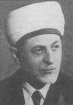

Ahmet Hamdi Akseki (1887-1951)

Son dönem Ýslam alimlerindendir. Diyanet Ýþleri Baþkanlýðýna getirilen üçüncü þahýstýr. Saltanat, Meþrutiyet ve Cumhuriyet dönemlerini görüp yaþadý. Görevde bulunduðu zamanlar dahil, Kur'an-ý Kerim'in Türkçe tercümesi ile namaz kýlýnmasý yönündeki görüþlere þiddetle karþý çýktý. Batý emperyalizmine yol açacak tarzdaki Garpçýlýk ve milliyetçilik akýmlarýna karþý mücadele verdi. Risâle-i Nur ve Bediüzzaman'a karþý samimi duygular beslediði gibi, isteði üzerine Risâle-i Nurlar kendisine gönderildi.Ahmet Hamdi, 1887 yýlýnda Akseki'ye baðlý Güzelsu (Sülles) nahiyesinde doðdu. Cami imamý olan Mahmud Efendi ile Hatice Hanýmýn oðludur. Küçük yaþta Kur'an-ý Kerim'i okumaya ve nahiyede bulunan medresede eðitim görmeye baþladý. On dört yaþýna gelince babasý tarafýndan Ödemiþ'e götürüldü ve burada bulunan Karamanlý Süleyman Efendi Medresesine devam etmeye baþladý. Arapça, Farsça, akaid, tefsir, fýkýh ve hadis gibi temel Ýslami ilimlerin derslerini almaya baþladý.
Akseki, 1905 yýlýnda Ýstanbul'a geldi. 1914 yýlýnda Fatih dersiamlarýndan olan Bayýndýrlý Mehmed Þükrü Efendiden icazet aldý. Bu arada tanýnmýþ alimlerden muhtelif dersler aldý. Ýstiklal Þairimiz Mehmed Akif'ten de özellikle "Muallaka-i Seb'a" olmak üzere Arap Edebiyatý ile alakalý dersler aldý. Bu arada Darülhilafeti'l-Aliyye Medresesinden mezun oldu. Akabinde Medresetü'l-Mütehassisin'e girerek Felsefe, Kelam, Hikmet-i Ýlahiyye þubesinden birincilikle mezun oldu. Girdiði imtihaný da kazanarak dersiam unvanýný aldý.
Akseki, bir taraftan öðrenim hayatýna devam ederken, diðer taraftan da yazýlar yazmaya baþladý. Bir ara Sebilürreþad'ýn Bulgaristan ve Romanya muhabirliðini de yaptý. Bu arada Bulgaristan'ý dolaþarak buradaki insanlarýn dini açýdan aydýnlanmalarýna katký saðlamaya çalýþtý. Ýzlenimlerini "Bulgaristan Mektuplarý" adý altýnda, dergide neþretti. Heybeliada'daki mektepte, din felsefesi ve ahlak derslerinde hocalýk vazifesinde bulundu. 1916-18 yýllarýnda Ýstanbul'da muhtelif camilerde kürsü þeyhliklerinde bulundu. Daha sonra iki ayrý medreseye önce tarih felsefesi, daha sonra ilm-i nefs müderrisi olarak tayin edildi.
Akseki, Milli Mücadele boyunca Anadolu'nun muhtelif yerlerini dolaþtý. Vaaz ve konferanslarýyla Kuva-yý Milliye hareketini destekledi. 1924 yýlýnda Ýlahiyat Fakültesi hadis ve hadis tarihi müderrisliðine atandý. Daha sonra Rýfat Börekçi'nin teklifi ile Diyanet Ýþleri Baþkanlýðý Müþavere Heyetine aza olarak tayin edildi. Tarikat-ý Salahiyye Cemiyetine üye olduðu iddiasýyla 1925 yýlýnda Ankara Ýstiklal Mahkemesinde yargýlandý. Mahkemede suçsuz bulunarak beraat etti. 1939 yýlýnda Diyanet Ýþleri Baþkan yardýmcýlýðýna atandý. Bu görevini sürdürürken 1947 yýlýnda Þerafettin Yaltkaya'nýn vefatý üzerine de baþkanlýða getirildi.
Akseki, dört yýl sürdürdüðü görevi devam ederken 9 Ocak 1951 tarihinde Hakk'ýn rahmetine kavuþtu. Naaþý Cebeci Asri Mezarlýðýna kaldýrýlarak burada defnedildi.
Akseki, Arapça, Farsça ve Ýngilizce dillerini bilen, son derece zeki, ileri görüþlü ve zamanýn geliþmelerini takip eden, kendini yenileyebilen bir din alimidir. Yazarlýk hayatýna Sýrat-ý Müstakim ve Sebilürreþad ekibi içinde yer alarak baþladý. Osmanlý toplumunun geçirmekte olduðu kültürel deðiþiklikler üzerinde durdu. Yazýlarýnda Batýlýlaþma ve din konularý üzerinde durdu. Modernleþmeye taraftar olmakla beraber, mutlak Batýlýlaþmaya karþý çýktý. Ýslam dininin yeniliklere ve bilime açýk olduðunu savundu.
Akseki, üç devri yaþamýþ olmakla beraber hizmetlerini daha çok Cumhuriyet döneminde gerçekleþtirdi. Özellikle Cumhuriyetin ilk yýllarýnda Türkçe ibadet adý altýnda yapýlmak istenen tahribatlara karþý çýktý. Kur'an-ý Kerim'in Türkçe tercümesi ile namaz kýlýnmasý yönündeki sinsi talepleri reddetti. Müþavere Heyeti azalýðý sýrasýnda cereyan eden bu tartýþmalar karþýsýnda taviz vermedi. Diyanet Ýþleri Baþkaný olan Þerafettin Yaltkaya'nýn isteðinin aksine, söz konusu olan arzunun dini ve ilmi hiçbir dayanaðýnýn olmadýðýný hazýrladýðý raporla ortaya koydu. (Süleyman Hayri Bolay; "AKSEKÝ, Ahmet Hamdi", TDVÝA., 2. C., s. 294)
Akseki ile Bediüzzaman arasýnda samimi ve dostane bir münasebetin özellikle 1947 yýlýndan itibaren artmaya baþladýðý, karþýlýklý haberleþmelerden anlaþýlmaktadýr. Gerek Bediüzzaman'a gerekse Risâle-i Nurlara yakýn alaka gösteren Akseki, Baþkanlýðý döneminde beþ-altý kez ýsrarla Risâle-i Nurlarýn kendisine gönderilmesini istemiþtir. (Emirdað Lahikasý, s. 256)
Bediüzzaman'ýn talebelerinden Mustafa Sungur, Ankara'da (1950) bulunduðu sýrada Diyanet Riyasetine uðrayarak Akseki ile görüþmüþtür. Bu görüþmede hürmet ve övgülerini dile getiren Akseki, Bediüzzaman'a selam söylemiþtir. (Son Þahitler 4. C., s. 38) Bu görüþmeden sonra Ankara'dan ayrýlýp Emirdað'a gelen Mustafa Sungur, iki takým Külliyatý, biri Akseki'ye diðeri de Müþavere Kuruluna verilmek üzere Ankara'ya götürmüþtür. Bediüzzaman, Külliyat ile birlikte mektup da yollamýþtýr. Mustafa Sungur, emanetleri yerine ulaþtýrdýktan sonra þu notu göndermiþtir:
"... kýymetli mektubunuzu Diyanet Riyaseti Baþkaný Ahmed Hamdi Efendiye teslim ettik. Sevinçler içinde mübarek mecmua ve Nurlarý kendi hususî kütüphanesine koydu. 'Ýnþaallah bunlarý kendi öz ve has kardeþlerime okumak için vereceðim ve bu suretle tedricî tedricî neþrine çalýþacaðýz' dedi. ... mektubunuzdaki emirlerinizi yapacaðýný söyledi. 'Fakat þimdi hemen birdenbire bunlarýn neþri olmaz. Ben bu eserleri has kardeþlerime okutturup, meraklýlara göre ileride neþrederiz. Ýnþaallah tam ve parlak þekilde ileride neþrine çalýþacaðýný" söyledi (Emirdað Lahikasý, s. 257).
Akseki'nin Bediüzzaman ile ilgili yaklaþýmý ve düþünceleri Tahsin Aydýn'ýn hatýralarýnda geçen ilginç bir nakille daha iyi anlaþýlmaktadýr. Kastamonu'da Bediüzzaman'ýn komþusu olduðu halde hiç ziyaretine gitmeyen Þevket isimli tüccar ,Yalova'da bir otelde Akseki ile görüþmelerini aktarmaktadýr. Bu görüþmede Akseki Kastamonulu olduðunu öðrenince Bediüzzaman'la görüþüp görüþmediðini sorar ve "hayýr" cevabýný alýnca teessüflerini bildirir. Kendisine birkaç kez tekrarla hata ettiðini belirttikten sonra Bediüzzaman'dan övgü ile söz eder. Akseki'den gereken dersi aldýðýný belirten Þevket hemen Tahsin Aydýn'a giderek kendisini Bediüzzaman'a götürmesini rica eder ve birlikte ziyaretine giderler. (Son Þahitler, 2. C., s. 151)
Akseki'nin görüþlerini aktaranlardan birisi de uzun süre Risâle-i Nur hizmetinde bulunan Selahaddin Çelebi'dir. Hem Þerafettin Yaltkaya hem de Ahmet Hamdi Akseki'nin Baþkan bulunduklarý dönemlerde kendileriyle görüþtükten sonra yaklaþýmlarýný aktarmaktadýr. Yaltkaya'nýn; "Diyanet Riyaseti Kur'an ve hadisten baþka hiçbir eserle ilgilenmez" þeklindeki ifadelerine karþýlýk daha sonra baþkanlýk yapan Akseki þu ifadeleri kullanmýþtýr:
"Üstadýn hayatý, eserleri, Kur'an ve hadis çerçevesi içinde bulunmaktadýr. Onda menfi milliyetçilik ve ýrkçýlýk yoktur..." Akseki bu ve benzeri ifadeleri kullanýrken o sýrada yanýnda bulunan Nazif Paþa; Üstadý 31 Mart hadiselerinden beri tanýdýðýný, o isyanda yaptýðý çok tesirli konuþmalarla Avcý Taburlarýnýn itaate getirdiðini söylemiþtir. (Son Þahitler, 2. C., s. 118) Böylece deðiþik zaman ve þahýslarýn huzurunda Bediüzzaman ve eserleri hakkýndaki müspet düþüncelerini dile getirmiþtir.
Eserleri:
Ruh ve Beka-yý Ruh; Ýslam öncesi ve sonrasýnda filozoflar tarafýndan ileri sürülen görüþ ve düþüncelerin karþýlaþtýrmalý tenkitleri yer almaktadýr. Tenkitler yapýlýrken ayrýca çaðdaþ filozof ve materyalistlerin ileri sürdükleri iddialara karþýlýk, yazarýn görüþleri de yer almaktadýr.
Ýslam Dini; El kitabý þeklinde hazýrlanmýþ olup Türkiye'de en çok okunan kitaplar arasýnda yer almaktadýr.
Mezahibin Telfiki ve Ýslamýn Bir Noktaya Cem'i; Talebeliði sýrasýnda Reþid Rýza'dan tercüme ederek yayýnladýðý eserdir. Sadeleþtirilmiþ baskýsý Hayreddin Karaman tarafýndan, "Ýslam'da Birlik ve Fýkýh Mezhebleri" adýyla neþredilmiþtir.
Bunlarýn dýþýnda çok sayýda eser kaleme almýþtýr; Ýslam Dini Fýtrîdir, Ahlak Dersleri, Askere Din Kitabý, Yavrularýmýza Din Dersleri, Düþmana Karþý, Yeni Hutbelerim yayýnlanmýþ eserlerinden bazýlarýdýr. Bunlarýn dýþýnda kaleme almýþ bulunduðu ancak, yayýnlanmamýþ eserleri de vardýr. (Süleyman Hayri Bolay; "AKSEKÝ, Ahmet Hamdi", TDVÝA., 2. C., s. 295)